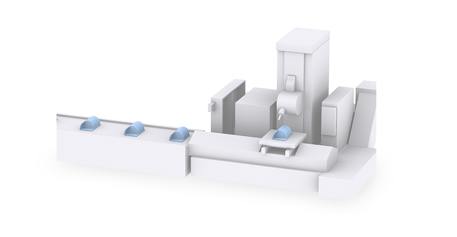
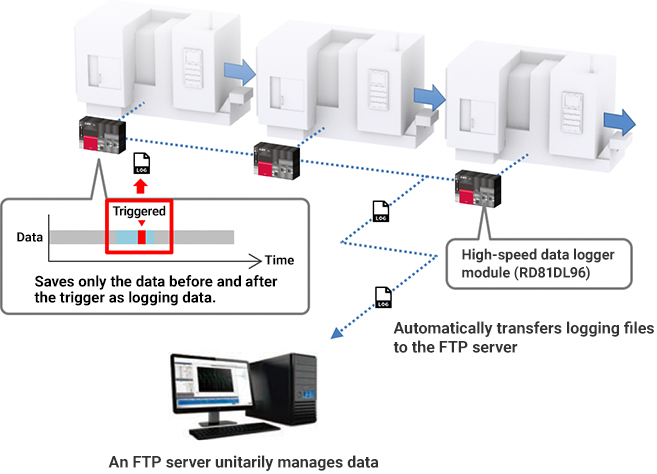
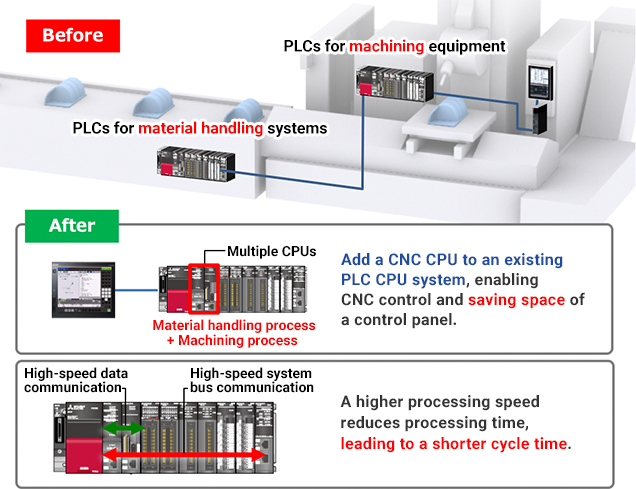
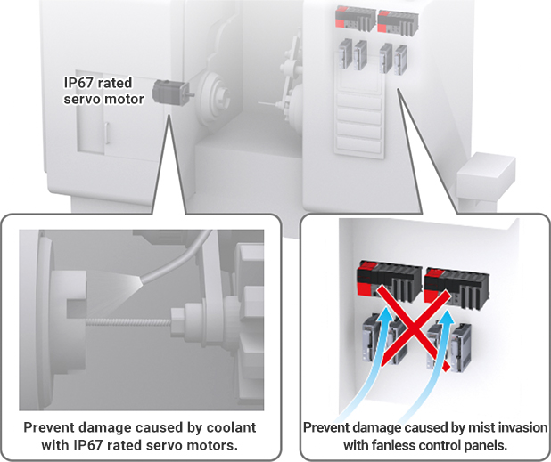

Solutions
Automotive Manufacturing

Engine Machining
- Enhancing traceability to reduce machining defects
- Improving cycle time and reducing control panel size through space saving by controllers(PLCs/CNCs)
- Preventing damage to servo motors caused by coolant during machining

Solutions to the Issues
| Issues | Solutions |
|---|---|
| Enhancing traceability to reduce machining defects | Unitarily manage the data collected by the high-speed data logger module. |
| Improving cycle time and reducing control panel size through space saving by controllers(PLCs/CNCs) | Configure a multiple CPU system by PLC CPUs and CNC CPUs. |
| Preventing damage to servo motors caused by coolant during machining | Enhance water resistance with IP67 rated servo motors and fanless control panels. |
Issues
Enhancing traceability to reduce machining defects
Solutions
Collect machining data with the high-speed data logger module without creating a ladder program. Realize traceability by automatically sending the data to the FTP server and unitarily managing it.
- The high-speed data logger module logs various data in the production process and realizes traceability of the production site by changing settings without stopping the equipment.
- CBM (Condition Based Maintenance) finds the peak loads of each tool from past machining data and uses it to predict the number of tool usages. Notifying the operator of the predicted number of tool usages remaining contributes to visualization of tool wear.
Point
- Save logging data in the Unicode/CSV/BIN file formats, and create various materials such as daily reports, ledgers, and reports in an Excel file format.
- Logging files can be automatically transferred to server computers.

Product Lineup
Issues
Improving cycle time and reducing control panel size through space saving by controllers(PLCs/CNCs)
Solutions
Reduce control panel size by installing PLC CPUs and CNC CPUs on the same base unit, incorporating a machining process into a conveyor control process. Shorten cycle time by a Mitsubishi Electric's original CNC-dedicated CPU that reduces high-speed data communication processing time.
- A CNC CPU is a multi-CPU CNC supporting MELSEC iQ-R series.
- High-accuracy machining with shorter cycle time is achieved by high PLC processing capability, faster optical communication between the CNC CPU and the drive, and shorter processing time between the CNC CPU and the PLC
Point
- CNC CPUs and PLC CPUs are independent, allowing a flexible system configuration according to the production scale and applications.

Product Lineup
Issues
Preventing damage to servo motors caused by coolant during machining
Solutions
Use IP67 rated servo motors to prevent damage to servo motors caused by coolant. Enhance water resistance with the fanless structure of the control module which enables fanless control panels.
- IP67 rated servo motors prevent damage caused by water or dust entering the junction point such as the shaft portion of the motor.
Point
- Prevent damage caused by coolant with IP67 rated servo motors.
- Prevent damage caused by mist invasion with fanless control panels.
